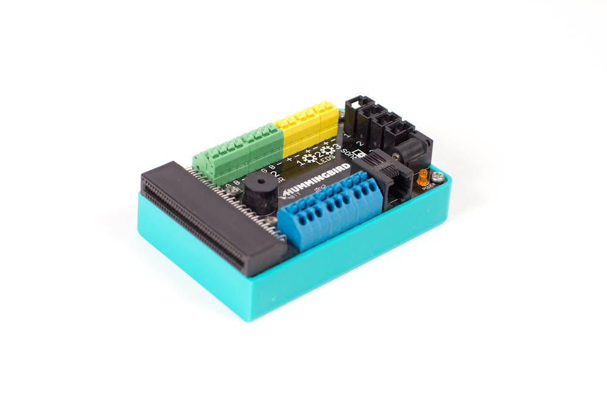
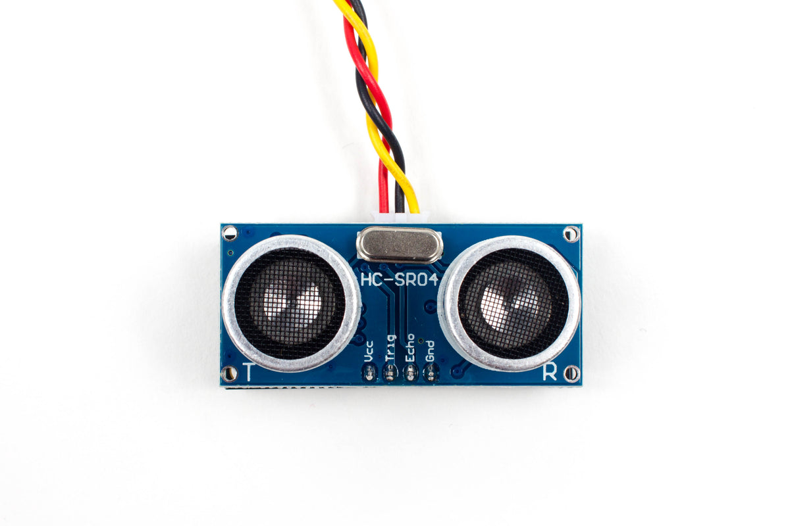
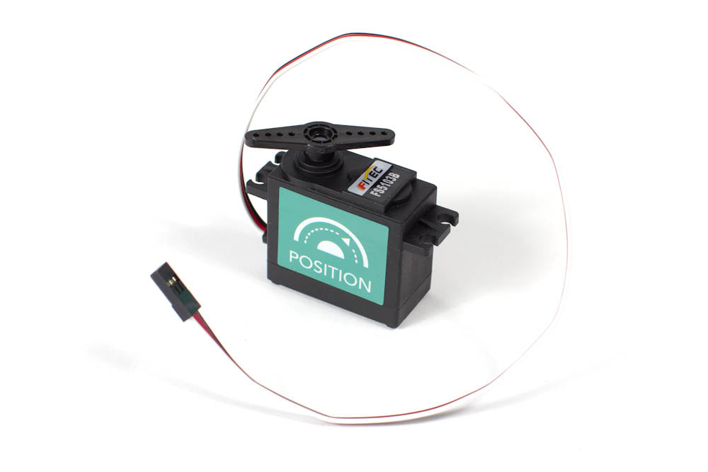
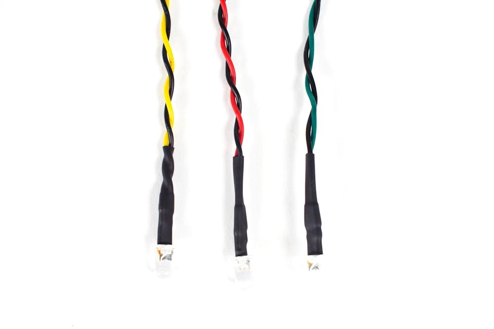
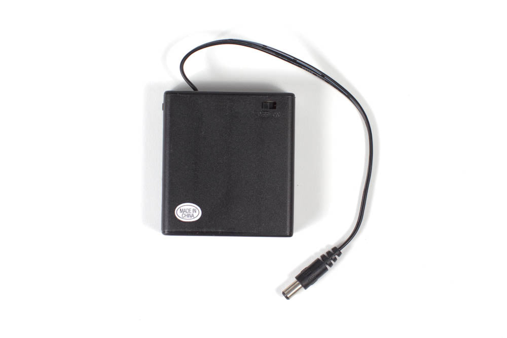
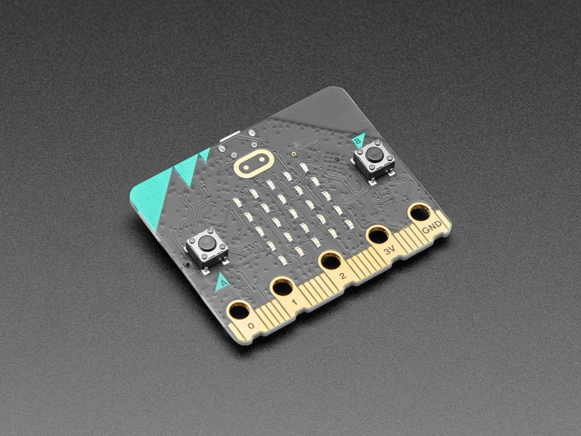
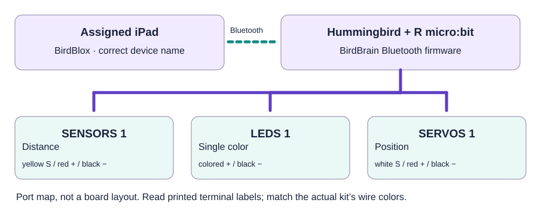

Monday, November 16, 2026 · Room 14 · Creative Robotics
Stephanie’s model:
an interactive creature.
Use the BirdBlox app on a district iPad with a Hummingbird Bit Premium Kit. A distance sensor detects a nearby hand; an LED lights; a position servo moves a paper or felt wing. This is the primary Creative Robotics programming workflow, not MakeCode’s Hummingbird extension.
Pull a matched Hummingbird station.






Purchased extras to stage
| Item | For one demo |
|---|---|
Allmax AA batteries B07F7RH8D4 | 4 cells + spares |
Rtteri white felt B0BKQ37Z2L | 2 sheets |
Aleene's Fabric Fusion glue B078HK7ZQ5 | 1 bottle |
TULIP paint B0BRP31W2R | 1 set |
Hot glue sticks B07JGP71FP | A few, with classroom glue gun |
Electrical tape B09SBLWDYD | 1 roll for securing nonmoving wires |
Room 14 equipment
One charged district iPad with BirdBlox installed, functioning Bluetooth, one labeled kit tray, a cardboard base, light craft sticks or paper for the wing, approved scissors, and the kit's terminal tool.
The purchased Premium Kit includes compatible components, but confirm that the actual checked-out kit has the servo horn and correct power pack before building.
Match each labeled port.

Connect with power OFF
| Component | Port |
|---|---|
| Distance sensor | SENSORS 1 |
| Single-color LED | LEDS 1 |
| Position servo | SERVOS 1 |
| Assigned R micro:bit | Hummingbird controller micro:bit socket, aligned per manufacturer |
| 4-AA battery holder | Controller's compatible power input |
No soldering. A servo lead's signal/+/− alignment must match the actual printed connector markings.
Assembly: build the moving creature.
- Check the complete kit. Find the controller, assigned R micro:bit, distance sensor, LED, position servo, horn, 4-AA holder, terminal tool, and iPad. Label the kit R-DEMO and record its three-word Bluetooth device name.
- Prepare BirdBlox firmware. Tri uses a Windows computer and micro-USB data cable to load the official BirdBrain Bluetooth firmware onto the assigned robotics micro:bit once. Do not flash a MakeCode program onto this R board; it would replace the firmware BirdBlox needs.
- Build a stable base. Secure the controller and servo to sturdy classroom cardboard (or a checked kit mount). Attach a small felt/paper wing to the servo horn, leaving a full clearance zone and easy access to the wiring.
- Attach the electronics. With kit power OFF, connect distance sensor to SENSORS 1, LED to LEDS 1, servo to SERVOS 1, and the correctly oriented R micro:bit. Seat the documented Hummingbird 4-AA battery pack.
- Check servo travel. Before attaching the final wing, test a conservative HOME and ACTIVE position under adult supervision so no paper, glue or fingers obstruct the motion. Mark the safe range on the model.
- Connect on the iPad. Open BirdBlox, create a new project, tap Hummingbird Connection → Connect Device, and select the recorded three-word device name. Verify the green connection indicator. If none appears, check firmware, battery and Bluetooth—not MakeCode.
- Calibrate sensor distance. In Robots, read the Bit Distance Sensor on port 1 three times: hand far, hand near, hand far again. Record values in centimeters, then choose a threshold T between near and far readings.
- Assemble and test the BirdBlox interaction. Add the block recipe below. Start with a modest LED brightness, run the servo at tested HOME/ACTIVE angles, and move a hand toward the distance sensor. Repeat far → near → far until it resets consistently.
- Record evidence and pack safely. Capture one photo of the labeled ports, one BirdBlox blocks screenshot, and a short movement demonstration. Stop the script, return the servo HOME if safe, disconnect BirdBlox, turn off the kit, and store the battery pack separately as appropriate.
BirdBlox iPad block-building recipe
Step A · Save a “SAFE RESET” script
→ Bit LED, port 1, brightness 0%
→ Bit Position Servo, port 1, angle HOME
→ wait 1 second
Before proceeding, test that HOME is a safe angle. This is a routine reset, not an emergency stop.
Step B · Complete interaction
→ forever
→ if (Bit Distance Sensor, port 1) < T cm
→ Bit LED, port 1, brightness 50%
→ Bit Position Servo, port 1, angle ACTIVE
→ else
→ Bit LED, port 1, brightness 0%
→ Bit Position Servo, port 1, angle HOME
→ wait 0.3 seconds
What students should notice
Input: visitor's hand approaches the distance sensor.
Decision: BirdBlox compares the actual distance against threshold T.
Two outputs: the LED lights and the servo moves the wing.
Reset: when the hand moves away, the LED turns off and the wing returns to HOME.
Optional sound: tablet recording versus Hummingbird buzzer
BirdBlox on iPad supports recording and playing sounds through the iPad audio output. A mentor may create a brief greeting or effect and trigger playback as an optional response. The Hummingbird’s built-in buzzer uses BirdBlox MIDI-note blocks for musical tones; it is not a speaker for intelligible recorded voices. Test sound timing and local permissions before allowing student recordings.
BirdBrain’s complete BirdBlox block descriptions · LED, motor, sensor and sound lessons
Stephanie’s readiness checklist
- □ Premium Kit found and physically checked, or fallback unpowered display labeled
- □ R-labeled micro:bit has BirdBlox-compatible Bluetooth firmware
- □ BirdBlox is installed on the assigned district iPad
- □ Three-word device name labeled; green connection indicator confirmed
- □ Distance sensor reads far / near / far; T recorded
- □ LED and position servo each work independently and then together
- □ Wing clears all nearby materials; HOME and ACTIVE angles recorded
- □ Safe reset and power-off rehearsed; project and block screenshot saved